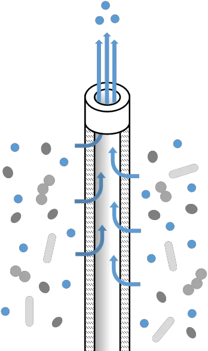
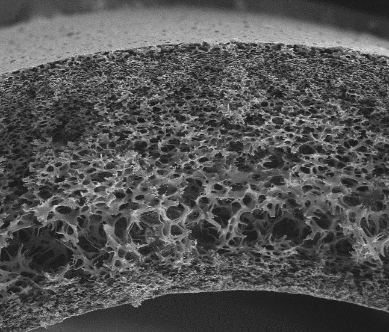
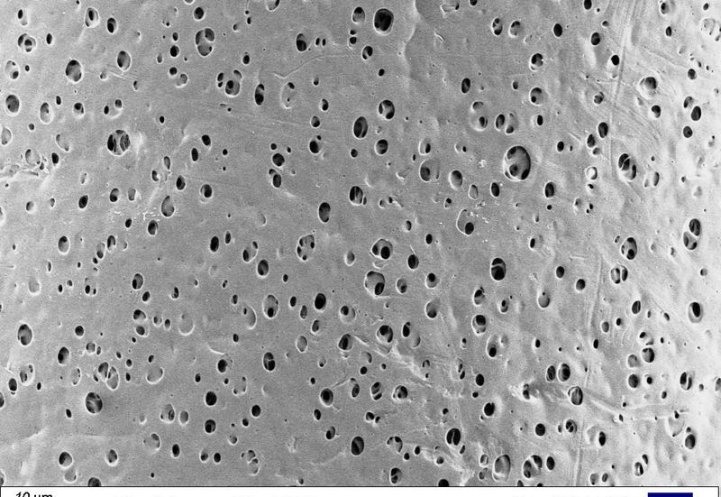
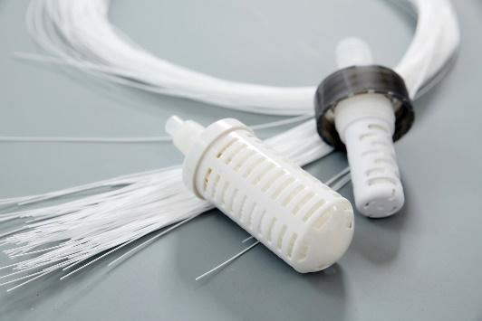
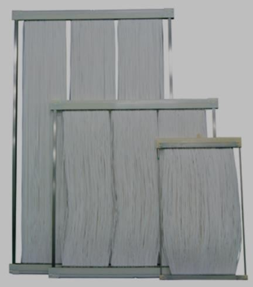
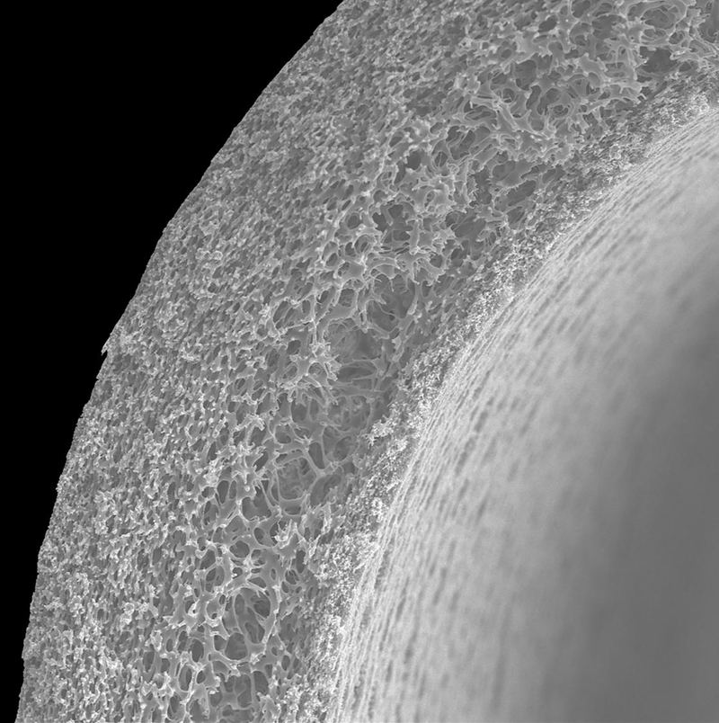

這份報告在講什麼？
分離膜是一種「超精密的篩子」，晶圓廠用它保住晶片良率，藥廠和洗腎中心用它擋下病毒與細菌。這份報告回答三個問題：
分離膜長什麼樣子？
膜上布滿看不見的小孔：比孔大的東西被擋下，比孔小的液體穿過去。孔開多大、怎麼排列，決定它能擋細菌、病毒還是金屬離子。



照片：膜淨材料募資簡報（2026）。
膜要擋的東西有多小？（以頭髮粗細約 80 微米來比）
紅血球 ≈ 7 µm
頭髮的約 1/10
細菌 ≈ 1 µm
頭髮的約 1/80，0.2 µm 無菌膜可擋
小病毒 ≈ 20 nm
頭髮的約 1/4,000
金屬離子 ≈ 0.3 nm
孔擋不住，要靠膜上的「官能基」抓
物體大小為業界通用的概略值；頭髮比例為換算的概數。
分離膜產業全景：兩大市場、十三個應用
分離膜就是「超精密的篩子」，主要賣給兩種客戶：晶圓廠（怕髒東西讓晶片報廢）和藥廠、洗腎中心（怕病毒和細菌傷到人）。
半導體端看粒子與金屬離子，攸關良率；生醫端看病毒去除率與生物相容性，攸關藥品能否上市與病人安全。兩邊都要求極窄的孔徑分布、極低的溶出物與完整性測試，所以 Pall、Merck、旭化成等公司能橫跨兩邊。
半導體製程：純度決定良率
6 個主要應用｜看粒子與金屬離子
生醫應用：安全決定上市
7 個主要應用｜看病毒去除率與生物相容性
代表廠商依本研究查到的產品與專利整理，非完整名單；細節見後文各國公司頁。
補充說明
半導體端有 6 個主要應用，生醫端有 7 個。Entegris 專攻半導體，Fresenius、Nipro 專攻透析；Pall、Merck、旭化成等公司則橫跨兩邊。
從樹脂到晶圓廠：五段價值鏈與台灣的位置
從塑膠原料到最後使用的人，共五個環節；台灣只有「用的人」很多，最難也最賺錢的「做膜」這一段幾乎沒有台灣公司。
點選任一段，看材料、代表廠商與台灣在這一段的處境。利潤與技術門檻最高的是第 2 段「成膜」。
01 樹脂原料
PTFE、PVDF、PES、聚碸、UPE。含氟樹脂（PTFE、PVDF）受 PFAS 規範衝擊：3M 已宣布 2025 年底前退出 PFAS 生產。
02 成膜技術（核心）
相轉換、熱致相分離、延伸、靜電紡絲。前面查到的專利幾乎都在這一段：Entegris 與科百特的熱致相分離 UPE 膜、Gore 的延伸 ePTFE、Merck 的靜電紡絲奈米纖維、旭化成的中空絲紡絲。
03 元件組裝
把膜做成濾心、膠囊、中空絲模組與 TFF 卡匣。
04 系統與驗證
完整性測試、超純水系統、透析機。
05 終端用戶
晶圓廠、生技藥廠、洗腎中心。濾器是消耗品，需定期更換。
成膜方法依各公司專利整理；台灣位置為本研究依公開資料所做的判斷
孔徑尺規：膜要攔下的東西有多小
膜要擋的東西小到肉眼看不見；孔開多大，決定它能拿去濾晶片用的化學品，還是濾病毒。
同一家膜廠能同時做半導體和生醫，是因為兩邊要攔截的東西落在同一個尺度帶。把滑鼠移到圓點上看說明，或切換應用別。
對數尺規；孔徑區間與物體大小為業界通用的概略值。
補充說明
半導體端，先進製程的光阻濾器要攔下 1–30 奈米的粒子（見科百特專利），還要用官能基抓住更小的金屬離子；生醫端，病毒過濾要攔下約 20 奈米的小病毒、但讓約 7 奈米的抗體或白蛋白通過，這是最難的分離之一。RO、NF 多屬水處理產業，是超純水系統的前段。
材料決定用途，也決定誰是主要廠商
膜用哪種塑膠做，決定它耐不耐酸、適合醫療還是工業；其中 PTFE、PVDF 兩種含氟材料，可能被歐盟限制。
PTFE、PVDF 都屬含氟聚合物，會受歐盟 PFAS 限制草案影響。用下方按鈕篩選。
| 膜材料 | 特性 | 主要用途 | 代表廠商 |
|---|---|---|---|
| PTFE／ePTFE 含氟 | 耐強酸鹼、疏水 | 蝕刻液、強化學品、氣體 | Gore、Pall、住友電工、日東電工 |
| UPE | 低溶出、耐溶劑 | 光阻（含 EUV）、溶劑 | Entegris、科百特 |
| 尼龍 | 親水、可吸附雜質 | 光阻、化學品 | Pall、Entegris |
| PES | 親水、高流量 | 無菌過濾、病毒移除 | Merck、Sartorius、Pall |
| PVDF 含氟 | 低蛋白吸附 | 無菌、病毒移除、超過濾 | Merck、旭化成 |
| 聚碸／PVP | 生物相容、可紡中空絲 | 血液透析 | Fresenius、東麗、旭化成 |
| 纖維素類 | 親水、低吸附 | 病毒移除、透析 | 旭化成、Nipro |
各公司產品與專利資料（Google Patents）；Entegris EUV 光阻過濾技術說明；PharmTech
補充說明
纖維素類包括旭化成 Planova 的銅氨再生纖維素，與 Nipro 透析器常用的三醋酸纖維素。含氟材料的 PFAS 風險是後段「法規對台灣影響」的伏筆。
同一張膜，做成四種產品
同一種膜可以做成四種外型的產品，就像同一塊布可以做成衣服、包包或口罩。
四張圖都是型態示意，非實物照片。
摺疊式濾心
膜摺疊增加面積，裝入可更換的外殼。
化學品、超純水、無菌過濾
膠囊式
濾材與外殼一體成形，用完整顆丟掉，避免污染。
光阻使用點過濾、一次性生物製程
中空纖維
數千根細管成束，管壁就是膜（右為截面）。
血液透析、病毒移除、氧合、脫氣
平板卡匣
平板膜疊層，液體沿膜面掃過，濾液向下穿透。
掃流（TFF）濃縮與純化



照片：膜淨材料募資簡報（2026）。
補充說明
摺疊式濾心靠摺疊把大面積膜塞進小外殼；膠囊式把濾材和外殼做成一體，換的時候整顆丟掉，避免污染；中空纖維是一束細管，透析器、葉克膜的氧合器、病毒濾器（Planova）都用這種型態；平板卡匣用於掃流過濾，液體平行掃過膜面以減少堵塞，這也是澳洲集團管制清單點名的設備型態。
放大來看：一張膜，兩種分離原理
膜有兩種工作方式：一種像篩子把顆粒擋下、再用化學「黏」住金屬；另一種像洗腎，讓毒素自己慢慢滲出去。
左邊是半導體濾膜的篩分加吸附，右邊是透析中空纖維的擴散。動畫為示意。
半導體濾膜：篩分加吸附
上下兩面都是緻密層：上表面先擋下最大的雜質、保護內層；中間孔洞由大變小（梯度孔），顆粒依大小分層卡住，不會全部堵在表面；下表面再做第二道截留。所以流量大、壽命長，也更安全。
透析中空纖維：擴散
補充說明
左圖對應 Entegris、Pall 的專利主題：非對稱（梯度）孔結構與接枝官能基捕捉金屬離子。示意圖採上下雙緻密層、中間梯度孔的結構：上表面緻密層先擋下最大的雜質，中間由大孔到小孔做深層過濾（大顆粒卡在大孔、小顆粒卡在小孔），下表面緻密層做第二道截留，可提高納污量與流量，也更安全。右圖是血液透析的中空纖維：血液在纖維內流動，透析液在纖維外反向流動，尿素等小分子靠濃度差擴散到透析液，並隨透析液往反方向帶走，血球與白蛋白等大分子因孔徑限制留在血液中。Fresenius 與東麗的聚碸膜專利，改良的就是這道膜壁的孔徑分布與生物相容性。
晶圓廠裡，液體每走一步都要過濾
晶片製造時，每一種液體在使用前都要先過濾；最難的是光阻那一步，要擋下比病毒還小的顆粒。
點選步驟查看供應商與說明。第 3 步光阻過濾是先進製程最關鍵、也是專利競爭最激烈的位置。
01 超純水製造
RO 脫鹽、膜接觸器脫氣、UF 終端過濾。膜接觸器可把超純水中的氧降到 1 ppb 以下。
02 化學品供應
去除酸鹼與溶劑中的粒子和金屬離子。
03 微影塗佈（最關鍵）
光阻在噴嘴前做使用點過濾，攔截 1–30 nm 粒子。Entegris 的 UPE 膜、科百特的 UPE 專利（CN113351033B）都瞄準這裡。
04 蝕刻清洗
強酸強鹼環境，需耐化學的 PTFE 濾材（例：Gore US11452972 帶胺基氟聚合物濾材）。
05 CMP 研磨
濾掉研磨液中的大顆粒，避免刮傷晶圓。
Entegris 10-K 與技術說明；3M Liqui-Cel 產品頁；Google Patents（科百特 CN113351033B、Gore US11452972）；Business Wire（2023/5）。各步驟供應商為代表性例子，不是完整名單。
一瓶抗體藥，要穿過至少四道膜
做一瓶抗體藥要過四道以上的膜；最關鍵的一道，是把病毒濾掉、卻讓藥物分子留下來。
單株抗體的下游製程依序是澄清、層析、病毒過濾、濃縮換液與無菌過濾。第 4 步病毒過濾最關鍵。
01 細胞培養
在生物反應器中培養細胞生產抗體，之後進入下游純化。
02 澄清
深層過濾去除細胞與碎片。
03 層析純化
抓出目標蛋白，也可用膜吸附器（如 Sartobind）。
04 病毒過濾（最關鍵）
要攔下約 20 奈米的小病毒、又讓約 10 奈米級的抗體通過。
05 濃縮換液
TFF 卡匣正是澳洲集團管制清單點名的掃流過濾，大面積的組件出口需要許可。
06 無菌過濾
0.2 µm 膜過濾後充填。
各公司產品資料；Thermo Fisher 產品頁（Zeta Plus）；Solventum／3M Membrana 醫療膜頁面；JMCTI 判定解說
從德國實驗室到全球寡占：百年時間軸
這個產業起源於 100 年前的德國，二戰後美國、1970 年代日本跟上，近 20 年則是大公司互相併購。
技術源頭在德國，二戰後美國建立產業化能力，日本在 1970 年代從人工腎臟切入；2000 年後的主線是併購整合。依國家篩選：
Sartorius、Fresenius、旭化成メディカル公司沿革；Pall、Millipore、Entegris 公司史；3M SEC 8-K；Business Wire
補充說明：Millipore 的起源
Millipore 公司史提到，二戰時歐洲供水檢驗設施被毀，科學家發展出用於檢測飲水細菌的微孔膜，之後由加州理工改良、美國政府委託 Lovell Chemical 試產，創辦人 Jack Bush 買下製程權利成立 Millipore。
2000 年後的併購主線：Merck 買 Millipore、Danaher 買 Pall、Entegris 併 Mykrolis 與 CMC Materials。
今天的五大集團，是怎麼併出來的
今天的龍頭大多是「買來的」：五大集團都是一連串併購的結果。
深色＝今日集團；橘色虛線框＝分拆。Millipore 一家就分成兩支：生物製程留在 Merck，半導體部門 Mykrolis 併入 Entegris。
Entegris／Millipore 公司史；Sartorius 公司史；3M SEC 8-K（2005、2015）；Business Wire、MassDevice（2025）
補充說明：3M 這條線最曲折
2005 年買 CUNO（Zeta Plus 深層濾材），2015 年以約 10 億美元買下 Polypore 的分離媒材事業（含 Membrana），2024 年把醫療事業分拆成 Solventum，2025 年 9 月 2 日 Solventum 把過濾事業以約 41 億美元賣給 Thermo Fisher，成為其生命科學解決方案部門下的 Filtration and Separation 事業。
四個區域、十多家公司，各自強在哪裡
德國強在醫療用膜，美國強在晶片用膜，日本強在洗腎與中空纖維；韓國和中國正在追。
切換國家查看每家公司的主力產品、核心強項與抽樣查證的代表專利。產品描述為型態，非實物照片。
德國強在生物藥過濾與透析器。專利主題：病毒移除、完整性測試、透析膜改質。
Merck（Millipore）
Viresolve Pro 病毒過濾、Millipore Express 無菌濾器、Durapore PVDF 膜、Pellicon TFF 卡匣
生物藥下游過濾產品線最完整，從澄清到無菌一次供應
- US7108791 三層非對稱超濾膜摺疊膠囊
- US9623352 靜電紡絲奈米纖維，逆轉錄病毒去除逾 6 log
- 2015 年「選擇性疊層」專利，提升 Viresolve Pro 一致性（號碼未揭露）
Sartorius
Sartopore 無菌濾器、Virosart 病毒濾器、Sartocon TFF 卡匣、Sartobind 膜吸附器
一次性製程與濾器完整性測試，驗證能力強
- US6186341 接合後邊緣仍可潤濕，可做完整性測試
- US6938460 以定壓液體流量取代氣體壓降測試
- US10350551 PTFE 無菌濾器快速測試
- US10253299 硫酸化纖維素膜純化流感病毒
Fresenius Medical Care
FX CorAL 透析器（Helixone hydro 膜）、FX CorDiax 系列
聚碸透析膜大量生產，產品與自家透析服務網結合
- US9149770 雙層中空絲，溫和血漿分離
- US11872530 添加維生素 E，減少 PVP 溶出與補體活化
- EP1671695 捲曲中空纖維專利，2025 年遭德國最高法院宣告無效
補充說明
FX CorAL 使用 Helixone hydro 膜，會在膜內表面形成類凝膠的水層，減少蛋白質吸附，降低病人的免疫反應；2021 年 11 月起在瑞士上市，陸續推廣到德、法、義等歐洲市場。Fresenius 同時是全球最大的透析服務提供者之一，讓透析器有穩定的自用通路。
Sartorius 的專利特色是「驗證」而不是膜材料本身，反映生物製藥對無菌濾器完整性測試的法規要求。Fresenius 的 EP1671695 是對 Nipro 提告時使用的專利，2025 年 5 月報導德國聯邦最高法院（X ZR 50/23）宣告無效。
各公司產品頁；Fresenius FX CorAL 新聞（2021/11）；Google Patents 各專利頁；BioProcess International；JUVE Patent（2025）
美國掌握半導體過濾，並跨足醫療膜。專利三條路線：結構、表面化學與 ePTFE。
Pall（Danaher）
PhotoKleen 光阻濾器、Ultipleat 濾心；生物端 Pegasus Prime 病毒濾器、Supor PES 膜
半導體液體過濾市占約 35%，半導體與生物製程雙棲
- US5886059 表層緻密、孔徑漸增的 PES 膜
- US11241657 正電荷膜加非對稱膜，超純水矽膠體去除約 99%
- US5543047 等：Ultipleat 摺疊與 EZD 膠囊
Entegris
EUV 光阻用 UPE 濾器、Impact 與 QuickChange 化學品濾器、Waferguard 氣體純化
專攻半導體，同時控制粒子與金屬離子；高雄廠就近供應
- US8758887 多層共擠出、一體成形的不同孔徑膜
- US12409423 一面緊密、一面開放的聚乙烯膜
- US11465104 多元醇／多膦酸基，去除酸鹼液金屬
- US12059656 含氮官能基，去除胺類液體金屬
W. L. Gore
ePTFE 膜、20 nm PTFE 液體濾器、耐強酸鹼的氟聚合物濾材
握有 ePTFE 材料源頭，耐化學性最強
- US3953566、US4187390 ePTFE 基礎專利
- US7306729 高強度、小孔、低流阻 PTFE
- US11452972 帶胺基氟聚合物濾材，耐強酸鹼（申請人為日本 Gore）
Thermo Fisher：買下 3M 系的過濾與醫療膜
強項：醫療膜材供應醫材廠（OEM），並補強生物製程過濾。
- Zeta Plus 深層濾材：生物製程澄清（源自 CUNO）
- DIAPES、PUREMA：透析與血液過濾膜（Membrana）
- OXYPLUS、PLASMAPHAN：葉克膜氧合、血漿分離
- 半導體、電池與醫材製造用的超純水膜
- Liqui-Cel 脫氣膜接觸器目前仍以 3M 品牌銷售
- US6409921（Membrana，1997 優先權）：熱致相分離聚烯烴膜，緻密表層加多孔支撐，用於血液氧合
- US6497752（Membrana，1999）：聚甲基戊烯或聚丙烯一體非對稱膜
- US5695545（原 Hoechst Celanese）：聚丙烯中空絲膜接觸器，高溫高壓下脫氣
補充說明
Pall 的 PhotoKleen、Ultipleat 與 Entegris 的 Impact、QuickChange、Waferguard 等名稱，都出現在兩家的專利訴訟紀錄中；Entegris 技術說明指出其 UPE 濾器用於 EUV 化學增幅型光阻，且 UPE 膜孔徑越小，橋接缺陷越少（R² 達 0.99），新一代產品靠膜結構調整而非化學表面處理。Pall 的 PES 非對稱膜專利多承自收購的 Memtec。AIChE 2023 年會摘要另提到 Pall 開發宣稱可攔截 2 奈米以下的改質 ePTFE，但作者單位未明列 Pall。
Thermo Fisher：Solventum 是 3M 的醫療事業，2024 年 4 月 1 日分拆上市，3M 保留 19.9% 股權。2025 年 2 月 Solventum 宣布把淨化與過濾事業賣給 Thermo Fisher，9 月 2 日完成，價格約 41 億美元（Thermo Fisher 新聞稿稱約 40 億美元現金，飲用水過濾事業另行剔除），預估淨收入 34 億美元。這個事業 2024 年營收約 10 億美元，Thermo Fisher 預估 2025 全年約 7.5 億美元。專利現任權利人依 Google Patents 標示為 3M Innovative Properties，交易後是否移轉給 Thermo Fisher，公開資料未確認；Liqui-Cel 品牌歸屬也未確認。
各公司產品頁與專利訴訟紀錄；BIS Research；Business Wire（Thermo Fisher 2025/9）；MassDevice；3M 新聞稿（2024/4 分拆）；3M／Solventum Membrana 醫療膜頁；Google Patents；Entegris EUV 光阻過濾技術說明
日本強在中空纖維、透析與 PTFE 加工。專利強項：中空纖維紡絲與 PTFE。
旭化成
Planova FG1（2024 推出，通量約為 BioEX 的 7 倍）、Planova BioEX、Microza 中空絲、透析器
病毒過濾指標品牌，血漿製劑與抗體藥都用
- US4399035 PVDF 中空絲微濾（Microza 基礎）
- US4808315 管壁孔隙梯度的病毒移除中空絲
- US6797169 去除細小病毒、IgG 透過率逾七成
- US11534723 耐氫氧化鈉清洗
東麗
聚碸中空絲透析器；RO 逆滲透膜元件（含超純水前段）
透析與水處理雙主軸，正把透析膜技術延伸到病毒移除
- US6103117 聚碸中空絲，低白蛋白流失
- US12172133 塗層聚碸絲，低壓病毒移除
Nipro
Solacea 透析器（不對稱三醋酸膜，1.5–2.5 m²，適用 HDF）
非合成膜路線，給對合成膜敏感的病人
- US7524417 彈性套筒縮窄流道，增加內部過濾
- 2025 年在 Fresenius 捲曲中空纖維專利（EP1671695）案勝訴
日東電工、住友電工
日東 TEMISH 通氣膜與 Hydranautics RO 膜；住友 Poreflon PTFE 中空絲
PTFE 多孔膜加工，耐化學與脫氣應用
- US5282965 電漿親水化 PTFE 液體濾膜
- US9295931 單層 PTFE 空氣濾材
- US12397250 抗裂延伸 PTFE 膜
- US7735660 多層 PTFE 中空絲，易反洗
- US11801480 細徑高泡點，用於脫氣
- US12115503 外表面孔徑較小
補充說明
Planova FG1 是旭化成 2024 年 10 月推出的新一代病毒過濾器，通量約為 Planova BioEX 的 7 倍，可縮短過濾時間，不需預過濾也能維持高蛋白回收；2025 年獲得 BioTech Breakthrough 獎。Nipro 的 Solacea 使用不對稱三醋酸（ATA）膜，強調低血栓性、能承受高對流量而少流失白蛋白。東麗的 RO 膜與日東集團的 Hydranautics 都是半導體超純水系統前段常見的膜。
旭化成的專利脈絡：1980 年代 PVDF 中空絲與孔隙梯度病毒膜，到 2000 年代針對細小病毒（parvovirus）的 Planova 20N，再到耐鹼清洗。Planova 上市年份：35N 1989、15N 1992、20N 2001。東麗正把透析用的聚碸／PVP 技術延伸到生物製程病毒移除。日東電工查到的專利偏空氣與通氣過濾，半導體液體過濾的比重無法確認。
旭化成新聞稿（2024/10）；Nipro Solacea 產品頁；各公司產品資料；Google Patents；PMC 綜述
亞洲挑戰者：國產替代與快速跟隨。
韓國｜Synopex
半導體奈米濾器（2024 首度國產），供三星與 SK 海力士
政府補助加國內大客戶，產能可滿足韓國全部需求
- 2024 年在東灘工廠量產
- 韓國年需求約 8,000 支、1,000 億韓元
- 政府補助 123 億韓元
中國｜杭州科百特
光阻用 UPE 濾膜、摺疊濾心與膠囊、中空纖維、病毒過濾器、一次性袋
產品線廣、員工約 5,700 人，同時切入半導體與生物製程
- CN113351033B UPE 光阻濾膜（攔截 1–30 nm 粒子）
- 另一件對準 PES 病毒膜
- 公司宣稱逾 300 項專利
台灣
Entegris 高雄廠生產先進液體濾器；本土濾能做空氣分子污染（AMC）濾網
貼近全球最大晶圓代工需求；液體濾膜仍靠外商
- Entegris 高雄廠投資約 5 億美元
- 生產先進液體濾器、高純度容器與沉積材料
- 濾能專注 AMC 化學濾網，不是液體濾膜
Korea Times（2024/12）；chemie.de 科百特資料；Business Wire（2023/5）；工商時報；Google Patents
各家專利集中在哪些技術主題
專利就像「技術地盤」；這張表看每家公司把地盤插在哪些技術上。
用國家篩選公司；點選公司欄位可標示該公司，滑過圓點看主題。最底列是每家落在幾個主題。
顯示全部 11 家／組。
● ＝ 抽樣查到的代表性專利落在該主題，非完整檢索。英特格＝Entegris、頗爾＝Pall、默克＝Merck、戈爾＝Gore、3M 系＝Membrana 等（今屬 Thermo Fisher 事業）、透析廠＝Fresenius 與 Nipro。
補充說明
這張表是根據抽樣查證的代表性專利整理，不是完整的專利地圖。3M 系的專利包含 Membrana 的熱致相分離聚烯烴氧合膜，以及原 Hoechst Celanese 的聚丙烯中空絲膜接觸器（Liqui-Cel 技術），現任權利人為 3M Innovative Properties。若要做正式的專利布局分析，建議用 IPC 分類（如 B01D67、B01D69、B01D71、A61M1）在專利資料庫做全量檢索與計數。
專利戰集中在模組設計，而不是膜本身
大公司打官司搶的多半不是膜本身，而是「濾心怎麼裝上機台」，因為這決定客戶好不好換廠商。
半導體過濾的訴訟幾乎都圍繞「濾器如何快速裝卸到機台歧管」，因為這直接決定客戶換供應商的成本。
| 年份 | 當事方 | 爭點 | 結果 |
|---|---|---|---|
| 1983 | Gore 告 Garlock | ePTFE 基礎專利有效性 | 聯邦巡迴法院認定部分請求項未被證明無效 |
| 2003–07 | Mykrolis 告 Pall | 濾器模組與歧管密封（Pall PhotoKleen EZD） | 初步禁制令後因住友電工先前技術解除 |
| 2005–08 | Pall 告 Entegris | Ultipleat 摺疊結構與 EZD 膠囊等四件專利 | 結果未查到公開紀錄 |
| 2009 | Millipore 告 Gore | 一次性無菌取樣裝置 | 結果未見報導 |
| 2025 | Fresenius 對 Nipro | 捲曲中空纖維透析器（EP1671695） | 德國聯邦最高法院宣告無效 |
vLex 判決；Semiconductor Digest；Silicon Semiconductor；BioPharm International；JUVE Patent
補充說明
膜材料本身的專利較少被拿來打官司。Mykrolis 對 Pall 一案，Pall 一度因 EZD-3 被判藐視法庭（21 萬美元），之後禁制令因先前技術解除，2007 年聯邦巡迴法院維持（490 F.3d 1340）。
下一輪專利競賽的五個方向
接下來大家比的是：更小的孔、能抓金屬的膜、不含氟的膜，以及中國的追趕速度。
EUV 光阻：2 奈米以下
Entegris UPE 與改質 ePTFE 競逐更小孔徑與 ppt 級攔截。
金屬離子捕捉
在膜上接枝官能基，同時過濾粒子與溶解金屬（Entegris、Pall）。
無 PFAS 膜材
歐盟 PFAS 限制逼近；Fraunhofer 2024 年發表約 7 奈米孔的聚丙烯腈膜。
一次性生物製程
預滅菌組件與完整性測試成為專利重點（Sartorius、Merck）。
中國快速跟隨
科百特同時切入 UPE 光阻濾膜與 PES 病毒膜。
對台灣的意涵
需求端全球最大，但液體濾膜幾乎全靠外商在地生產。
Entegris 技術說明；AIChE 2023；Fraunhofer IAP（2024/6）；Google Patents
補充說明
PFAS 這點值得追蹤：半導體濾膜大量使用 PTFE 等含氟材料，歐盟若擴大 PFAS 限制，無氟膜材會成為新的專利戰場，但目前查到的多是研究機構成果，膜廠公開的無 PFAS 膜專利還很少。最後一格是研究推論，不是引用數據。
膜與相關材料實際受到的五種管制
有些大型膜產品出口要先申請許可，但並不是禁止賣；真正斷過貨的，是疫情或外交衝突時的特殊管制。
| 機制 | 管什麼 | 誰執行 | 性質 |
|---|---|---|---|
| 澳洲集團生物兩用清單 | 掃流過濾設備（總面積 ≥1 m²）與膜組件（單件 ≥0.2 m²） | 日本外為法、德國 BAFA、美國 2B352 | 許可制 |
| 核不擴散清單 | 氣體擴散屏障用抗 UF6 腐蝕粉末 | 歐盟 0C005 等 | 許可制 |
| 日本 2019 對韓 | 氟化聚醯亞胺、光阻、氟化氫（材料，非膜） | 日本經產省 | 個別許可，數月內放行 |
| 美國《國防生產法》 | 疫苗用濾器、袋材優先供應國內 | 美國政府 | 事實上斷供 |
| 日本光阻管制傳聞 | 2025 年底傳出限制對中光阻出貨 | 未經證實 | 官方未宣布 |
日本機械輸出組合（JMCTI）判定解說；美國聯邦公報（2003、2009）；歐盟 Annex I；KEIA；Reuters；TrendForce（2025/12）
補充說明
第一列最關鍵：日本的判定基準是掃流過濾裝置裝膜總有效面積 1 平方公尺以上、單一模組或卡匣 0.2 平方公尺以上；單純的膜材料、接頭、配管不在管制範圍。這類規格符合時，出口到任何國家都要事前許可，所以生物製程用的大型 TFF 卡匣確實受管制，但這是「許可制」，不是禁止出口。美國 2009 年還把一次性（拋棄式）過濾組件明確納入。
「德日將薄膜列為戰略物資」？
常聽到「德日把薄膜列為戰略物資、禁止出口」，這個說法不精確，正確說法是「要許可」。
不是禁止出口，
而是「許可制」加上「供應鏈槓桿」
德日都把特定規格的過濾設備與膜組件列入兩用物項，出口須逐案許可；但目前查不到任何國家明文全面禁止分離膜出口。真正造成斷供的，是 2019 年日本對韓的材料管制與 2021 年美國的《國防生產法》。
補充說明
建議簡報時用這一頁修正原本的說法，避免被聽眾質疑。若原本的說法有特定出處（例如某篇新聞或報告），可再提供比對。
各國法規與產業政策，對台灣的六個問題
美、德、日都沒把台灣列入「快速通關」名單，所以台灣買某些關鍵濾材比較慢、也比較受制於人。
點選地圖上的國旗，查看法規／事件與對台灣的影響。橘色＝供應國的管制與政策，藍色＝亞洲競爭者，綠色＝台灣自身；虛線表示對台灣的供應或競爭關係。
管制品對台需許可；2021 年《國防生產法》斷供前例
出口管理規則（EAR）2B352 掃流過濾屬生化管制（CB2），國家管制表中台灣在 CB2 欄有標記；2021 年動用《國防生產法》保障疫苗原料。
自美進口大型 TFF 組件須許可；再出口美國原產管制品也受限。危機時濾器與袋材可能優先供應美國本土。
國家管制表顯示台灣在 CB1、CB2、CB3 等欄有標記，代表這些管制理由的品項出口到台灣需要許可。
台灣不適用 EU001，逐案許可；PFAS 新規衝擊含氟濾材
兩用物項規則 2021/821：EU001 通用許可只涵蓋美、日、英、加、澳等 9 國；歐盟全面 PFAS 限制草案已有 RAC 最終意見。
德國管制品出口到台灣須向 BAFA 逐案申請，交期較長。PFAS 限制生效後 18 個月適用，PTFE、PVDF 濾材成本與供應受影響。
2023 年 3M 宣布 2025 年底前退出所有 PFAS 生產（含含氟聚合物），已讓含氟材料供應趨緊。SEAC 草案意見僅新增樂器 PVDF 弦與射頻元件兩項豁免，公開摘要未提到半導體或濾膜豁免，後續需追蹤正式條文。
台灣非 A 類，管制品須個別許可
外為法「A 類」27 國享較寬鬆許可，台灣不在其中；日本掌握光阻七成以上市占。
日本管制品對台須個別許可。2019 年對韓案例顯示，日本可透過材料許可審查施加壓力。
A 類待遇加國產濾器，台灣兩者皆無
2023 年回到日本 A 類；2024 年政府補助 123 億韓元，Synopex 首度國產半導體奈米濾器。
韓國晶圓廠多了本土備援來源，台灣在同類濾器上沒有對應的國產供應。
科百特追趕；實體清單與再出口限制
科百特同時布局 UPE 光阻濾膜與 PES 病毒膜專利，並在台設據點；台灣 2026 年 6 月實體清單新增 265 個實體，含中國。
可能成為低價第二來源，但採購需做供應鏈安全審查；對中出貨也受台灣實體清單與美國再出口規則限制。
液體濾膜主要由外商在台生產
戰略性高科技貨品清單 2026 年 2 月修訂，與澳洲集團等管制體系接軌；Entegris 高雄廠投資約 5 億美元。
本地廠出口管制規格的 TFF 組件須先申請許可。在地產能可降低運輸風險，但上游膜材與樹脂仍靠進口。
生醫端：台灣洗腎人口超過 9 萬人，發生率與盛行率長年居全球前列（聯合報 2026/6），而全球透析器前三大廠合計約占七成。「上游膜材與樹脂仍靠進口」是本研究依公開資料所做的推論；台灣清單是否明確納入掃流過濾設備，需以貿易署公告的正式清單規格確認。
美國商務部國家管制表；愛爾蘭企業部 EU001 說明；神戶大學輸出令別表第 3 清單；SGS（2026/4）；KEIA；TrendForce；Korea Times（2024/12）；Google Patents；中央社（2026/6）；工商時報（2026/2）；Business Wire（2023/5）
台灣可以先做的三件事
台灣可以先做三件事：多備貨、找第二來源；持續追蹤法規；學韓國用補助推動國產。
分散來源、建安全庫存
針對 PTFE 系濾材與病毒過濾器建立第二來源與庫存，降低單一國家許可或斷供風險。
追蹤清單與 PFAS
每年檢視美、歐、日、台兩用清單修訂與歐盟 PFAS 條文；出口 TFF 組件前先做該非判定。
參考韓國補助模式
以研發補助與產學合作，推動 UPE、PES 與無氟膜材的國產化，並鎖定晶圓廠與生技廠為首批用戶。
補充說明
這三點是根據前面查證內容整理的研究建議，不是引用的政策。第三點中「無氟膜材」與歐盟 PFAS 限制、永續發展目標都有關，可視聽眾調整強調方向。
歐美七家與亞洲七方：各自強在哪裡
一張表看完 14 家公司各自擅長什麼、在半導體和生醫哪一邊。
德國三家都在生醫端；美國的 Pall、Entegris、Gore 主導半導體過濾，其中 Pall 是唯一兩邊都是主力的歐美大廠；日本以生醫膜與 PTFE、RO 加工見長；台灣需求端最強，但液體濾膜的成膜技術仍在外商手上。
| 公司 | 國家 | 目前主力產品 | 核心強項 | 半導體 | 生醫 |
|---|---|---|---|---|---|
| Merck | 德國 | Viresolve Pro、Millipore Express、Pellicon | 生物藥下游過濾產品線最完整 | — | 主力 |
| Sartorius | 德國 | Sartopore、Virosart、Sartobind | 一次性製程、完整性測試 | — | 主力 |
| Fresenius | 德國 | FX CorAL、FX CorDiax 透析器 | 聚碸透析膜量產、自有透析服務網 | — | 主力 |
| Pall | 美國 | PhotoKleen、Ultipleat、Pegasus Prime | 半導體液體過濾市占第一，雙棲 | 主力 | 主力 |
| Entegris | 美國 | EUV 光阻 UPE 濾器、Impact | 粒子加金屬離子控制，貼近晶圓廠 | 主力 | — |
| Gore | 美國 | ePTFE 膜、PTFE 液體濾器 | ePTFE 材料源頭，耐化學性 | 主力 | — |
| Thermo Fisher | 美國 | Zeta Plus、Membrana 醫療膜 | 醫療膜材 OEM、生物製程 | 有 | 主力 |
| 旭化成 | 日本 | Planova FG1、Microza、透析器 | 病毒過濾指標品牌 | 有 | 主力 |
| 東麗 | 日本 | 聚碸透析器、RO 膜元件 | 透析加水處理雙主軸 | 有 | 主力 |
| Nipro | 日本 | Solacea 透析器 | 不對稱三醋酸膜、低血栓 | — | 主力 |
| 日東、住友電工 | 日本 | TEMISH、RO 膜、Poreflon | PTFE 多孔膜加工 | 有 | — |
| Synopex | 韓國 | 半導體奈米濾器 | 國產替代，供三星與 SK 海力士 | 主力 | — |
| 科百特 | 中國 | UPE 光阻濾膜、病毒過濾器 | 產品線廣、快速跟隨 | 主力 | 主力 |
| Entegris 高雄、濾能 | 台灣 | 液體濾器、AMC 濾網 | 貼近晶圓代工需求，膜材靠外商 | 主力 | — |
「主力」＝該公司在此領域有主要產品線；「有」＝有相關產品；「—」＝本研究未查到主要布局。依本研究查到的產品與專利整理。
補充說明
Thermo Fisher 透過收購 Solventum 過濾事業，補上醫療膜材與生物製程過濾，並有超純水膜。Gore 標為生醫「—」是指本研究未查到其生醫過濾膜的主要布局，不代表沒有醫療產品。旭化成在半導體欄標「有」，指的是 Microza 中空絲可用於超純水等水處理；東麗、日東標「有」指的是超純水前段的 RO 膜。中國科百特是唯一同時在半導體與生醫兩邊追趕的亞洲廠；韓國靠政府補助完成半導體濾器國產。
主要來源
- Sartorius：Zsigmondy 與膜濾器起源
- Fresenius：聖文德爾廠 50 週年
- 旭化成メディカル沿革
- Millipore 公司史
- Entegris（Wikipedia）
- Entegris 高雄廠啟用（2023）
- BIS Research 半導體過濾市場
- QYResearch 透析器市場
- Korea Times：韓國首度國產濾器
- JUVE Patent：Nipro 勝訴
- 聯合報：台灣洗腎人口（2026/6）
- JMCTI：掃流過濾判定解說
- 美國聯邦公報 2009：2B352.d
- BIS：Commerce Country Chart
- 愛爾蘭企業部：EU001 說明
- 神戶大學：輸出令別表第 3（A 類）
- KEIA：日韓管制的供應鏈影響
- Reuters：血清研究所與國防生產法
- SGS：歐盟 PFAS 限制進度（2026/4）
- 中央社：台灣實體清單更新（2026/6）
- 工商時報：戰略性高科技貨品清單修訂
- TrendForce：日本光阻管制傳聞
其他來源
Entegris 高雄廠宣布（Business Wire 2020/12）、工商時報（濾能）、chemie.de（科百特）、SCMP（2026/1）、PharmTech（Planova）、BioSpectrum Asia（Danaher 收購 Pall）、Entegris EUV 光阻過濾技術說明、AIChE 2023 年會摘要、Fraunhofer IAP 2024 新聞稿、vLex 判決（Entegris v. Pall；Gore v. Garlock）、BioPharm International（Millipore v. Gore）、內閣府經濟安保法特定重要物資、Materials Performance（3M 退出 PFAS）、Business Wire 與 MassDevice（Thermo Fisher 收購 Solventum 過濾事業，2025）、3M 新聞稿（Solventum 分拆，2024）、3M SEC 8-K（CUNO 2005、Polypore 分離媒材 2015）、3M／Solventum Membrana 醫療膜頁、Thermo Fisher Zeta Plus 產品頁。
專利號碼皆經 Google Patents 頁面查證。